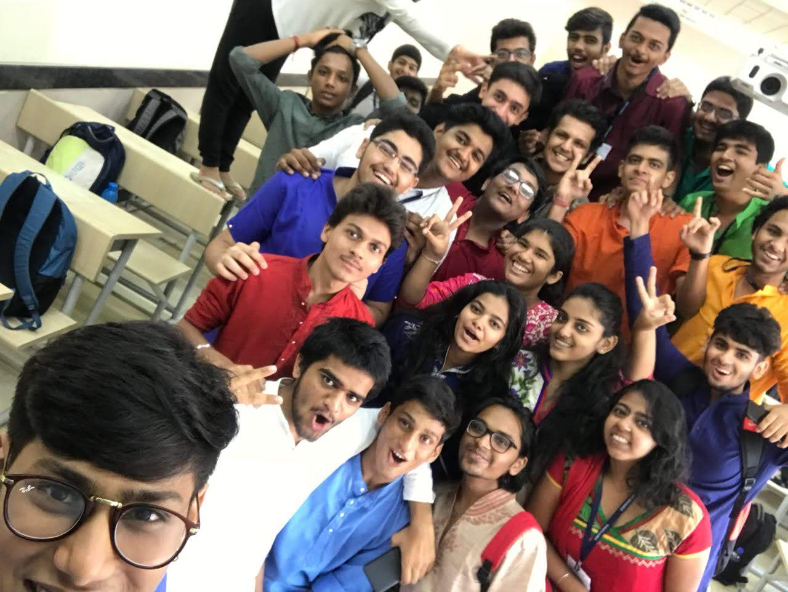

Starting from my childhood, I always had a knack for 'Macro Physics' which carried on to my college days where I chose to go for Mechanical Engineering from Dwarkadas J. Sanghvi College of Engineering. However it is just not possible for the conventional study system to provide the best knowledge in the field as it is too outdated. I further decided to become a part of the DJSRacing team which I could say was one of the best decisions in my life. Here I learned how to manage time , learnt multiple new softwares , and understood so many basic principles practically. Joining as a 'Motors Member', I tried to soak as much of the knowledge as possible. As I believe "No knowledge is ever wasted" , I always tried to understand multiple things. After a year I was provided with the opportunity to be a 'DriveTrain Lead' for my team. Here I had to apply both- The knowledge I learnt by being a Mechancial student for 3 years and the self-taught knowledge about Motors.However, the most important thing I did was the knowledge transfer to my juniors as I understand that repetition limits growth.
